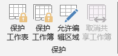
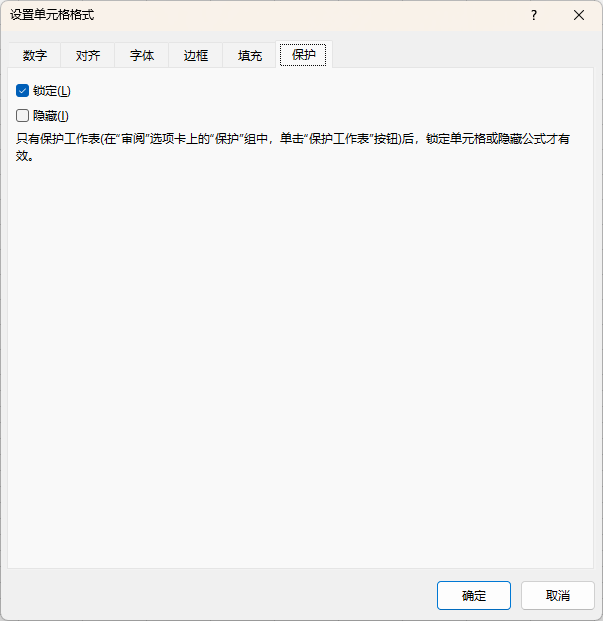

审阅
Review
- 内容 Contents
- 保护
窗口
- 保护工作表
- 限制其它用户当前工作表的操作；如编辑单元格或更改样式
- 需要设置密码
- 请 牢记密码，谨慎操作
- 保护工作簿
- 保护整个Excel文件，防止其它用户对工作簿的结构进行更改，如移动、删除或添加工作表
- 也可以在"文件" → "信息" → "保护工作簿"，设置整个excel文件的访问
- 允许编辑区域
- 部分区域允许凭密编辑：没有密码，不允许编辑；可以设置多个区域；如信息收集表中，仅仅允许用户操作数据字段，文字等提示字段不允许操作
- 部分单元格取消锁定：如果仅仅指定部分区域允许操作，应先在"单元格格式"对话框"保护"选项卡中，取消"锁定"，再执行保护工作表
- 隐藏公式：同样需要执行单元格的"隐藏"操作再执行保护工作表操作



